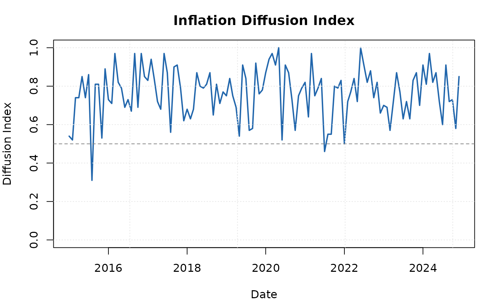

Measures the breadth of price increases across CPI components. For each period, computes the (weighted or unweighted) fraction of items with price changes exceeding a threshold. A diffusion index above 0.5 indicates that more than half of items are experiencing above-threshold price increases.
Usage
ik_diffusion(
data,
threshold = c("zero", "mean", "target"),
target = 0.02,
weighted = TRUE,
date_col = "date",
item_col = "item",
change_col = "price_change",
weight_col = "weight"
)Arguments
- data
A data.frame containing component-level inflation data.
- threshold
Character. The threshold rule:
"zero"(price_change > 0),"mean"(above the cross-sectional mean), or"target"(above an annualised target rate).- target
Numeric. Annualised inflation target (for
"target"threshold only). Default0.02(2%).- weighted
Logical. If
TRUE(default), compute the weighted fraction. IfFALSE, compute the simple (unweighted) fraction.- date_col
Character. Name of the date column. Default
"date".- item_col
Character. Name of the item/component column. Default
"item".- change_col
Character. Name of the price change column. Default
"price_change".- weight_col
Character. Name of the weight column. Default
"weight".
Value
An S3 object of class "ik_diffusion" with elements:
- diffusion
data.frame with columns: date, diffusion_index.
- threshold
Character. The threshold type used.
- weighted
Logical. Whether weights were used.
Examples
data <- ik_sample_data("components")
# Fraction of items with rising prices
d <- ik_diffusion(data, threshold = "zero")
print(d)
#>
#> ── Inflation Diffusion Index ───────────────────────────────────────────────────
#> • Threshold: Price change > 0
#> • Weighted: TRUE
#> • Mean diffusion: 0.765
#> • Latest diffusion: 0.85
#> • Observations: 120
plot(d)
